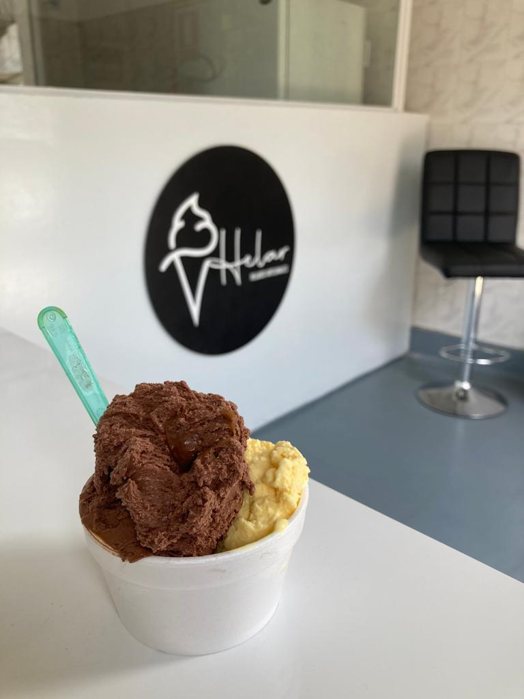

Helados artesanales
Sabores clásicos y originales, hechos en casa.
Helados artesanales
Sabores clásicos y originales hechos en casa, con la mejor relación calidad y precio. Para tomar en el local o llevar.
4,9 en Google · 235 opiniones
Bienvenidos
En Helar hacemos helado artesanal con sabores clásicos y originales. Nuestros clientes destacan el sambayón y una relación calidad y precio difícil de igualar.
Tenemos un local cómodo para tomarlo ahí mismo o llevarlo a casa, con atención rápida y amable.
ConocenosHelados artesanales
Qué hacemos
Sabores clásicos y originales, hechos en casa.
En potes de distintos tamaños.
Para disfrutar en el momento.
Opiniones en Google
“Muy buenos helados, con probablemente la mejor relación calidad-precio de Montevideo en su rubro. Tienen el mejor sambayón que probé en mucho tiempo. El local es cómodo y se puede consumir allí o comprar para llevar.”
“Excelentes los helados, riquísimos, con sabores clásicos y originales. La atención de Natalia fue genial, re dispuesta y atenta. ¡Volveremos!”
“Los encontré sin querer de camino al Palacio Legislativo. El lugar es bonito y la atención fue rápida y amable.”
Así de fácil
Pasá por Yatay 1404 o consultá por WhatsApp.
Clásicos u originales.
En el local o en tu casa.
Escribinos por WhatsApp y te respondemos a la brevedad.